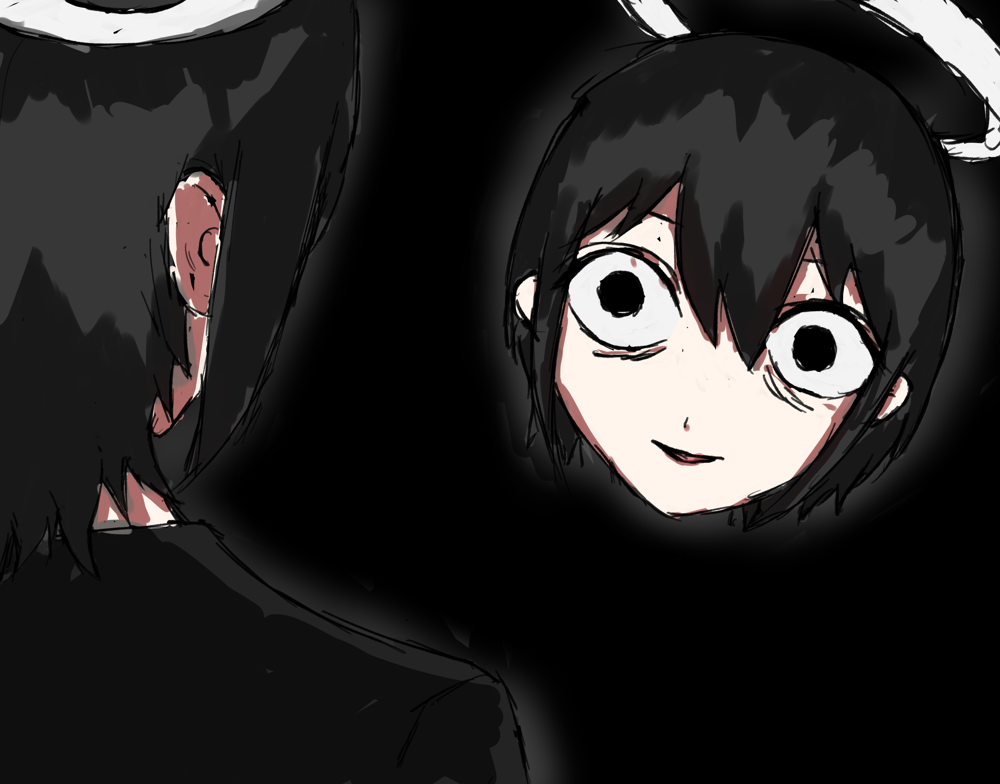

こんにちは、ザクザク食感です。
気が狂った。
精神のバランスが崩れているのを感じる。鬱で動けないとか躁で落ち着かないとかではなくて、寂しくて自分がキモくて居ても立っても居られない、思春期みたいな心のざわつきがある。
一年ぐらい前、病気のまま人に会ってもまともにコミュニケーションができなくて、このままじゃだめだと思ったのと、フォロワーからの助言がきっかけで精神科に通い始めた。
双極性障害だと診断されて薬を飲むようになってから、精神の不調はたちどころに良くなって、外に出られるようになって、趣味に打ち込めるようになって、人に会えるようになった。
僕は健常になって人とまともにコミュニケーションができるようになって自分自身が承認されることを望んでいたので、正しく変化できたと思っている。
でもそれと同時に自分が不幸であることを望む自分も常に自分の中にいて、健常になっていく自分を責め続けていた。
そういう自分がいるのは、自分の寂しさや苦しさを制御できずに人に迷惑をかけた自分が普通に生きているのが許せなかったり、不幸な状態の僕を見て承認してくれる人から承認を得られなくなるのが怖かったりするからだと思う。
ここ最近、この自分が幸福になることを許せない自分がすごく強くなってきて、脳がバグっている感覚がある。

なるべく坦々と自分の中で起きていることを書いたつもりだが、自分でも何が何だかよくわかっていない。
自分が許せない。どんどんまともになって、みんなが持っている幸せを手に入れ始めている。僕はそうなりたかったから病院に行って、自分がつくりたいもののために絵を描いたり、かわいく女装をしたり、人に愛されるためにダイエットしたりしている。幸せに向かって真っ直ぐ努力できている。自分の意志でそうしている。なのに自分のことが許せない。
意味が分からない。幸せだと感じたとき、どこか虚しさや自分への怒りも感じている。でも自分が失敗したり不幸だと思ったとき、それから脱したいと強く思う心の動きを感じる。いや、こんなことを文字に起こして発信している時点で、自分の苦しみをだしにしてよしよしされたいだけかもしれない。
自分の中に軸が二つあって気持ちが悪い。どっちも人に承認されたいという気持ちが根底にある気がするので矛盾していない気もするが、それによって起きる心の動きが真逆なので混乱する。
あと単純に僕から見える世界の広がり方が激しすぎる。人に会って話して踏み込んで、知らなかったことを知ったり、思いつきもしない考え方に触れたり、気づかなかった自分に気づいたり、当たり前だと思ってたことが全部間違っていることが多すぎて、急激な変化についていけていない。
宇宙のすべては慣性の法則に従って動いているという考え方を信じている。物体は安定しようとするので、変化が大きい分発生する反作用も大きいのだと思う。
その反作用の影響かもしれないが、心がすごく不安定で寂しい。でもそういう状態でも体は動くようになったから人とコミュニケーションを取って、人に縋って自分が進むべき道の答えを得ようとする心の動きが気持ち悪くて仕方ない。勝手に苦しめと思う。でも苦しいのは嫌なので助かろうとする。自分がめんどくさい。理解できない。
上手くまとめられない……とにかく今の僕はすごく歪な形をしていると思う。
友達にこのことをそれとなく話したら、「お前は今さなぎだからキモいんだよ」と言われた。妙にしっくり来た。
それでは、さようなら。